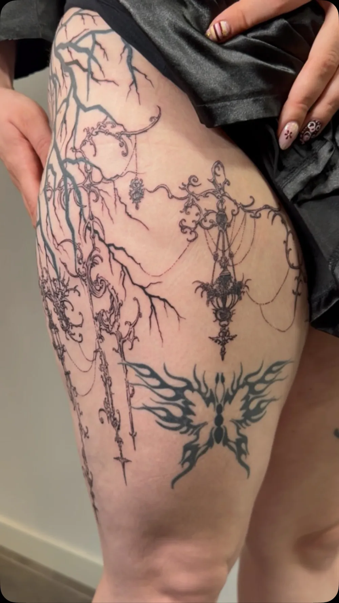
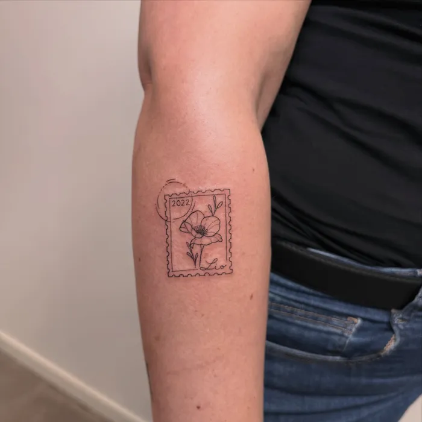
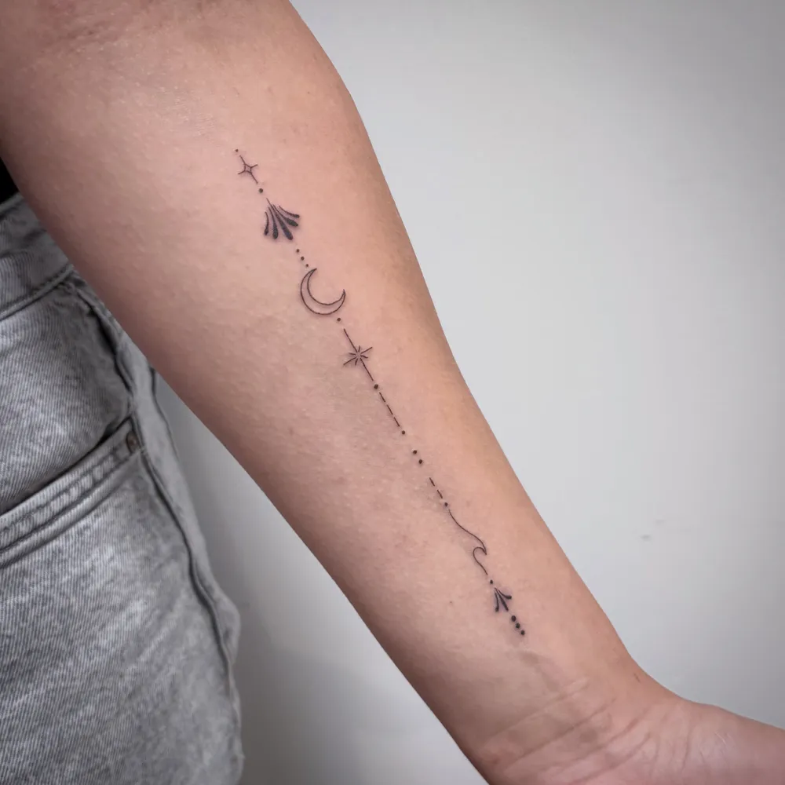

Achter bijna elke tattoo zit een reden.
Een geboorte, drie zussen op drie continenten, een liedje dat je nooit meer kwijt wil. Vertel me waarom je hem wil, dan teken ik hem voor jou en voor jouw lichaam.

Fine lines at their finest. Simple and delicate, yet powerful.

Three sisters from Colombia, each living on a different continent, meeting in Belgium.

Some flowers take you back to summer, to the sea, or bring you back home.

She trusted me for her first tattoo and now we are building a floral sleeve.



En veel, heel veel klein werk.
Een sterretje, een woord, een discobal. Die zet ik elke week, alleen schiet posten er vaak bij in. Of zoals ik het zelf zeg: "yes, I do a lot of them, but not many time to post it."





Mix & Match: kies er tot drie.
Elke maand teken ik een nieuwe pagina vol fineline-designs. Je kiest er één, twee of drie uit, en ze kunnen allemaal vaker gezet worden. Ideaal voor je eerste tattoo, of om samen met een vriendin te gaan.
Enkel designs van de pagina, fineline in zwart, prijs per persoon.

Lees dit even, dan weet je waar je aan toe bent.
Ik werk alleen en enkel op afspraak. Daarom hou ik de afspraken kort en duidelijk, voor jou en voor wie na jou komt.

- 01
Het design zie je op de dag zelf
Ik toon designs niet op voorhand. Tijdens de afspraak is er tijd genoeg om kleine dingen aan te passen. Wordt het groter dan je vroeg, dan verandert de prijs mee.
- 02
Op tijd, maar niet te vroeg
Hoogstens vijf minuten op voorhand. Is je afspraak om 11u30 en sta je er om 11u, dan wacht je even op straat.
- 03
Betalen gaat cash
Leuven heeft niet zoveel automaten. De dichtste vind je in de Parijsstraat 52 en op de Bondgenotenlaan 3.
- 04
Vanaf 16 jaar, met één supporter
Kinderen blijven thuis. Eén iemand mag mee in de wachtruimte, niet aan de tafel. Duurt je sessie langer dan een uur, kom dan liefst alleen.
Voorschot
Je lijstje
- Smeer de week ervoor. Je gewone crème en een zachte spons onder de douche. Scheren hoeft niet.
- Eet goed op voorhand. Lange sessie? Neem snacks mee, de keuken mag je gebruiken.
- Kom in het zwart. Makkelijke, donkere kleren. Zit je kledij in de weg, dan ligt er een kimono klaar.
- Cash op zak. Voor de rest van de prijs, na het voorschot.
Ze komen terug. Voor de derde, de vijfde keer.
"Ze neemt de tijd om met jou te kijken hoe de tattoo het mooiste zal worden en geeft een oprechte eerlijke mening, al moet ze het 100x opnieuw doen."
Linde G, die er intussen drie liet zetten"Ze nam uitgebreid haar tijd om samen met mij het design te bespreken zodat het volledig werd wat ik wou. Ook wanneer ik zelf enkele zaken nog niet zo goed wist (bvb grootte van de tattoo) hielp ze mij de juiste keuze maken."
Helena Stynen★★★★★"Vanesa heeft voor mij 3 jaar geleden mijn eerste fineline tattoo gezet, nu 3 jaar later ben ik terug bij haar geweest. Ze heeft een prachtige stijl en ongelofelijk veel geduld."
Joke Snyders★★★★★"Ondertussen al de 5de keer bij Vanessa langs gegaan! De professionele maar persoonlijke aanpak zorgt ervoor dat het een hele ervaring is en niet zomaar een "tattoo" zetten is."
Joren Houtevels★★★★★"Bij Vanessa eerst geweest voor rug tattoo. Heel fijn afgewerkt met fineline en veel details. Nu recent verder laten afwerken naar mijn schouder en borstkas. Heel mooi resultaat en rap genezen."
Jitse Vanden Dries★★★★★
Je idee, je grootte en wanneer je kan.
Meer heb ik niet nodig om te beginnen. Stuur er gerust een paar voorbeeldfoto's bij, dan kijk ik wat het mooiste wordt op jouw huid.
Wanneer de volgende maand openstaat, zie je dat eerst op Instagram.

- Studio
- Brusselsestraat 24, 3000 Leuven
- Afspraken
- Maandag tot zaterdag, enkel op afspraak
- @vrsartist · @delinkateleuven